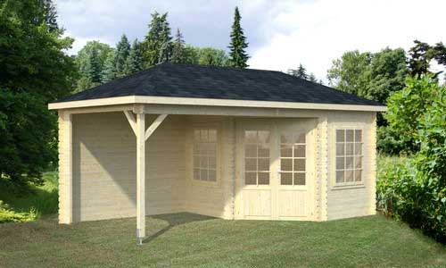
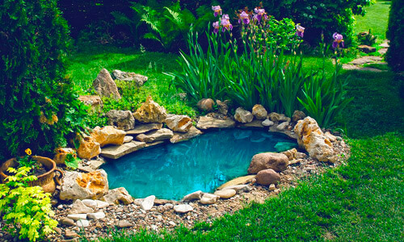

Casetas
Somos Fabricantes de casas de madera maciza en Indonesia. Con maderas nobles tropicales como la teca, merbau, y otras. Las maderas nobles tropicales generan un aceite y grasa que es un repelente natural a todo tipo de termitas, descomposición, etc. Por lo que son casas para toda la vida. Elegantes y exclusivas Sobre pedido, a la medida, sobre diseño del cliente, o bien de nuestro catalogo. Departamento arquitectónico y de diseño. En España e Indonesia. Certificado de la madera del gobierno de Indonesia. Amigos de lo ecológico. Normativa europea y control de calidad
Estanques
El estanque es uno de los elementos más atractivos del jardín y merece la pena tenerlo siempre y cuando dispongamos de espacio y algo de tiempo para atenderlo. Un estanque bien conseguido nos relaja, nos pone en contacto con la naturaleza y la biodiversidad, nos permite disfrutar de las plantas acuáticas y, en algunos casos, podrá convertirse en una piscina muy natural.